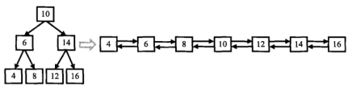
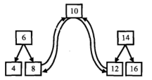

问题19 二叉树的镜像 问题描述：操作给定的二叉树，将其变换为源二叉树的镜像。
1 2 3 4 5 6 7 8 9 10 11 12 13 二叉树的镜像定义：源二叉树 8 / \ 6 10 / \ / \ 5 7 9 11 镜像二叉树 8 / \ 10 6 / \ / \ 11 9 7 5
测试数据（后续二叉树相关题目的测试数据都使用如下结构）：1 2 3 4 5 6 7 8 9 10 11 12 13 14 15 16 17 18 19 20 21 22 var root = { val: 1 , left: { val: 2 , left: null , right: null , }, right: { val: 1 , left: { val: 2 , left: null , right: null , }, right: null } }
交换过程：先序遍历二叉树，若有子结点则交换子结点，当交换完子结点后就得到了树的镜像。
1 2 3 4 5 6 7 8 9 10 11 12 13 function Mirror (root ) if (!root){ return null } let temp = Mirror(root.left); root.left = Mirror(root.right); root.right = temp; return root; }
相关题目：
问题20 顺时针打印矩阵 问题描述：输入一个矩阵，按照从外向里以顺时针的顺序依次打印出每一个数字，例如，如果输入如下矩阵： [[1,2],[3,4]] 则依次打印出数字 [1,2,4,3]
关键是理清打印一圈行列的变化以及分清哪些情况下才会继续打印，那些情况不会继续打印。
1 2 3 4 5 6 7 8 9 10 11 12 13 14 15 16 17 18 19 20 21 22 23 24 25 26 27 28 29 30 31 32 33 34 35 36 37 38 39 40 41 42 43 44 45 46 47 48 49 50 51 52 53 54 55 function printMatrix (matrix ) let start = 0 , rows = matrix.length, cols = matrix[0 ] && matrix[0 ].length, rst = []; if (!rows || !cols){ return null ; } while (rows > start*2 && cols > start*2 ){ printMatrixCircle(matrix, cols, rows, start); ++start; } function printMatrixCircle (matrix, cols, rows, start ) let endx = cols - 1 - start, endy = rows - 1 - start; for (let i = start; i <= endx; ++i){ rst.push(matrix[start][i]); } if (start < endy){ for (let i = start + 1 ; i <= endy; ++i){ rst.push(matrix[i][endx]); } } if (start < endx && start < endy){ for (let i = endx - 1 ; i >= start; --i){ rst.push(matrix[endy][i]); } } if (start < endx && start < endy - 1 ){ for (let i = endy - 1 ; i >= start + 1 ; --i){ rst.push(matrix[i][start]); } } } return rst; } console .log(printMatrix([[1 ,2 ],[3 ,4 ]]))
问题21 包含min函数的栈 问题描述：定义栈的数据结构，请在该类型中实现一个能够得到栈最小元素的min函数。
准备两个栈，一个用于普通操作，一个专门用于保存当前最小值的栈。
1 2 3 4 5 6 7 8 9 10 11 12 13 14 15 16 17 18 19 20 21 22 23 24 25 26 27 28 29 30 31 32 33 34 35 36 37 function push (node ) let minnum = min(); if (!minnum || node <= minnum){ stackmin.push(node); }else { stackmin.push(minnum); } stack.push(node); } function pop ( stackmin.pop(); return stack.pop(); } function top ( return stack[stack.length - 1 ]; } function min ( if (stackmin.length){ return stackmin[stackmin.length - 1 ]; }else { return null } } let stack = [], stackmin = [];
问题22 栈的压入、弹出序列 问题描述：输入两个整数序列，第一个序列表示栈的压入顺序，请判断第二个序列是否为该栈的弹出顺序。假设压入栈的所有数字均不相等。例如序列1,2,3,4,5是某栈的压入顺序，序列4,5,3,2,1是该压栈序列对应的一个弹出序列，但4,3,5,1,2就不可能是该压栈序列的弹出序列。（注意：这两个序列的长度是相等的）
以一个辅助栈，把输入的第一个序列依次压入栈，并按照第二个序列的顺序依次从栈中弹出，若过程能够完成，则说明正确。
1 2 3 4 5 6 7 8 9 10 11 12 13 14 15 16 17 18 19 20 21 22 23 24 25 26 27 28 29 30 31 32 33 34 35 36 37 38 39 40 41 42 43 44 45 46 47 function IsPopOrder (pushV, popV ) let check = false , n = pushV.length; if (pushV && popV && n > 0 ){ let nextPush = pushV, nextPop = popV, stack = []; while (nextPop.length){ if (nextPop[0 ] == stack[stack.length - 1 ]){ nextPop.shift() && stack.pop(); } if (nextPop[0 ] == nextPush[0 ]){ nextPop.shift() && nextPush.shift(); } while (nextPush.length && nextPop[0 ] != nextPush[0 ] && nextPop[0 ] != stack[stack.length - 1 ]){ stack.push(nextPush.shift()); } if (!nextPush.length && nextPop[0 ] != stack[stack.length - 1 ]){ break ; } } if (!nextPop.length){ check = true ; } } return check; } console .log(IsPopOrder([1 ,2 ,3 ,4 ,5 ], [4 ,5 ,3 ,2 ,1 ]))console .log(IsPopOrder([1 ,2 ,3 ,4 ,5 ], [4 ,3 ,5 ,1 ,2 ]))
问题23 从上往下打印二叉树 问题描述：从上往下打印出二叉树的每个节点，同层节点从左至右打印。
用一个队列记录当前打印的结点，在打印之前将其子结点依次入队（先左后右）
1 2 3 4 5 6 7 8 9 10 11 12 13 14 15 16 17 18 19 20 21 22 23 24 25 function PrintFromTopToBottom (root ) let arr = [], rst = []; if (root){ arr.push(root); } while (arr.length){ let node = arr.shift(); if (node.left){ arr.push(node.left) } if (node.right){ arr.push(node.right) } rst.push(node.val); } return rst; }
问题24 二叉搜索树的后序遍历序列 问题描述：输入一个整数数组，判断该数组是不是某二叉搜索树的后序遍历的结果。如果是则输出Yes,否则输出No。假设输入的数组的任意两个数字都互不相同。
后续遍历根结点在最后，其前面的队列中左子树都小于根，右子树都大于根。先找到根节点，然后利用递归依次判断左右子树是否是搜索二叉树。
关键是考虑特殊情况，仅有左右子树时的情况。
1 2 3 4 5 6 7 8 9 10 11 12 13 14 15 16 17 18 19 20 21 22 23 24 25 26 27 28 29 30 31 32 33 34 35 36 37 38 39 40 41 42 43 44 45 46 47 48 function VerifySquenceOfBST (sequence ) let len = sequence.length; if (!sequence || !len){ return false ; } if (len == 1 ){ return true ; } let root = sequence[len - 1 ]; let endLeft = sequence.findIndex((key )=> { if (key > root){ return true ; } }); for (let j = endLeft; j >= 0 && j < len - 1 ; ++j){ if (sequence[j] < root){ return false ; } } let left = true ; if (endLeft > 0 ){ left = VerifySquenceOfBST(sequence.slice(0 , endLeft)); }else if (endLeft < 0 ){ left = VerifySquenceOfBST(sequence.slice(0 , len - 1 )); } let right = true ; if (endLeft >= 0 ){ right = VerifySquenceOfBST(sequence.slice(endLeft, len - 1 )); } return (left && right); } console .log(VerifySquenceOfBST([7 ,4 ,6 ,5 ]));
问题25 二叉树中和为某一值的路径 问题描述：输入一颗二叉树和一个整数，打印出二叉树中结点值的和为输入整数的所有路径。路径定义为从树的根结点开始往下一直到叶结点所经过的结点形成一条路径。
PS:注意递归的思想,具体详解看代码
1 2 3 4 5 6 7 8 9 10 11 12 13 14 15 16 17 18 19 20 21 22 23 24 25 26 27 28 29 30 31 32 33 34 35 36 37 38 39 40 41 42 43 function FindPath (root, expectNumber ) if (!root){ return []; } let stack = [], rst = [], sum = 0 ; preorder(root); return rst; function preorder (root ) sum += root.val; stack.push(root.val); if (!root.left && !root.right){ checkStack(); } if (root.left){ preorder(root.left) } if (root.right){ preorder(root.right) } sum -= stack.pop(); } function checkStack ( if (sum == expectNumber){ rst.push([...stack]); } } }
上述内容中有一些冗余，可精简如下，比如计算总和以及判断是否等于预期总和：1 2 3 4 5 6 7 8 9 10 11 12 13 14 15 16 17 18 19 20 21 22 23 24 25 26 27 28 29 30 31 32 33 function FindPath2 (root, expectNumber ) if (!root){ return []; } let stack = [], rst = []; preorder(root, 0 ); return rst; function preorder (root, sum ) sum += root.val; stack.push(root.val); if (!root.left && !root.right && sum == expectNumber){ rst.push([...stack]); } if (root.left){ preorder(root.left, sum) } if (root.right){ preorder(root.right, sum) } stack.pop(); } }
问题26 复杂链表的复制 问题描述：输入一个复杂链表（每个节点中有节点值，以及两个指针，一个指向下一个节点，另一个特殊指针指向任意一个节点），返回结果为复制后复杂链表的head。（注意，输出结果中请不要返回参数中的节点引用，否则判题程序会直接返回空）
单纯复制一个链表不难，依次遍历结点然后复制其结点以及next指向结点即可，问题是由于单链表无法随机访问，所以random结点指向的前驱无法知道的情况下，就无法在新链表中找到对应clone结点。
暴力解法是：第一遍遍历并复制所有链表，并将每一个结点对应的random结点的位置（没找一个random结点就需要遍历一遍链表）保存起来，然后遍历复制链表找到random指针指向的结点位置。这种方法的时间复杂度是 $O(n^2)$
另一种方法就是利用hash保存每个结点的索引，每次设置random结点时就去hash表中找到其索引，这种方法在JavaScript实现上需要利用ES6的Map类型（能将对象作为key值，而不是字符串）。时间复杂度为O(n)，但需要O(n)空间。
最优方法为将新的clone结点直接链接在原结点后，然后指向下一个原结点，在不创建额外hash空间的情况下仅仅创建需要的结点数，而且能够O(1)时间内找到对应的random结点，
1 2 3 4 5 6 7 8 9 10 11 12 13 14 15 16 17 18 19 20 21 22 23 24 25 26 27 28 29 30 31 32 33 34 35 36 37 38 39 40 41 42 43 44 45 46 47 48 49 50 51 52 53 54 55 56 57 58 59 60 61 62 63 64 65 function Clone (pHead ) if (!pHead){ return null ; } cloneNode(pHead); connectRandom(pHead); return partNodes(pHead); function cloneNode (head ) let pointer = head; while (pointer){ let cloned = new RandomListNode(pointer.label); cloned.next = pointer.next; pointer.next = cloned; pointer = cloned.next; } } function connectRandom (head ) let pointer = head; while (pointer){ let cloned = pointer.next; if (pointer.random){ cloned.random = pointer.random.next; } pointer = cloned.next; } } function partNodes (head ) let pointer = head.next, clonedHead = head.next; while (pointer.next) { pointer.next = pointer.next.next; pointer = pointer.next; } return clonedHead; } }
问题27 二叉搜索树与双向链表 问题描述：输入一棵二叉搜索树，将该二叉搜索树转换成一个排序的双向链表。要求不能创建任何新的结点，只能调整树中结点指针的指向。
由于二叉搜索树的前序遍历就是排序后的结果，而二叉树和双向链表一样，都有两个指针，所以针对根结点而言，需要做的就是将其左右两个指针分别指向其前序的前继和后继结点。而将前继结点的右指针指向根，后继结点的左指针指向根，如此就完成了根与左右两边的排序。如图：


如上图，采用递归的思想，依次解决每课子树的根的问题。
1 2 3 4 5 6 7 8 9 10 11 12 13 14 15 16 17 18 19 20 21 22 23 24 25 26 27 28 29 30 31 32 33 34 35 36 37 38 39 40 41 42 43 44 45 46 47 48 49 50 51 function Convert (pRootOfTree ) if (!pRootOfTree){ return null ; } let last = null ; trans(pRootOfTree); while (last && last.left){ last = last.left; } return last function trans (root ) if (!root){ return ; } let pointer = root; if (pointer.left){ trans(pointer.left) } pointer.left = last; if (last){ last.right = pointer; } last = pointer; if (pointer.right){ trans(pointer.right) } } }
测试数据：1 2 3 4 5 6 7 8 9 10 11 12 13 14 15 16 17 18 19 20 21 22 23 24 25 26 27 28 29 30 31 var root = { val: 10 , left: { val: 6 , left: { val: 4 , left: null , right: null , }, right: { val: 8 , left: null , right: null , }, }, right: { val: 14 , left: { val: 12 , left: null , right: null , }, right: { val: 16 , left: null , right: null , }, } } console .log(Convert(root))
问题28 字符串的排列 问题描述：输入一个字符串,按字典序打印出该字符串中字符的所有排列。例如输入字符串abc,则打印出由字符a,b,c所能排列出来的所有字符串abc,acb,bac,bca,cab和cba。
输入描述:
PS：此问题暂时没有研究清楚
1 2 3 4 5 6 7 8 9 10 11 12 13 14 15 16 17 18 19 20 21 22 23 24 25 26 27 function Permutation (str ) let result = [] if (str.length<=0 ) return result; var arr = str.split("" ); result = sortString(arr, '' ) return result; function sortString (arr,sortTmp ) if (arr.length ==0 ){ result.push(sortTmp); }else { var isRepeated = {} for (var i = 0 ; i<arr.length; i++){ if (!isRepeated[arr[i]]){ var p = arr.splice(i,1 )[0 ]; sortTmp += p; sortString(arr,sortTmp); arr.splice(i,0 ,p); sortTmp = sortTmp.slice(0 ,sortTmp.length-1 ); isRepeated[p] = true ; } } } return result; } }